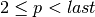
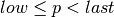

primenos – Prime Number Calculator¶
Analysis¶
This does two things.
Sieve of Eratosthones to show prime numbers between two values.
There are potentially several variations on the Sieve algorithm. We’ll create s generator function which iterates through the prime numbers.
Prime factoring of any number.
Implementation¶
hamcalc.math.primenos – Prime Number Calculator
This includes a Sieve of Eratosthones plus a factorization.
Some test cases.
>>> import hamcalc.math.primenos as primenos
>>> list(primenos.sieve_range_iter(2,3))
[2]
>>> list(primenos.sieve_range_iter(1,2))
[]
>>> list(primenos.sieve_range_iter(2,10))
[2, 3, 5, 7]
>>> list(primenos.factor(2))
[2]
>>> list(primenos.factor(99))
[3, 3, 11]
>>> list(primenos.factor(2**32+1))
[641, 6700417]
- hamcalc.math.primenos.factor(n)[source]¶
Simple prime factorization of n.
Factoring small numbers (less than 2**32) is quick because small integer values are fast in Python.
Factoring larger numbers is slower because it uses long integers which are slower and tie up more memory.
Parameters: n – Number of factor Returns: Yields factors.
- hamcalc.math.primenos.sieve_list_iter(last)[source]¶
Sieve of Eratosthones: generate primes, p, such that 
This creates a large list object, which can use a LOT of memory. But it’s simple. The list is a trifle faster than a set because it avoids hash collisions.
Parameters: last – primes will be 2 <= p < last. Returns: Yields prime numbers
- hamcalc.math.primenos.sieve_range_iter(low, high)[source]¶
Sieve of Eratosthones such that .
This uses the sieve_list_iter() because it’s potentially faster for factoring.
Parameters: - low – lowest value.
- last – primes will be low <= p < last.
Returns: Yields prime numbers
- hamcalc.math.primenos.sieve_set_iter(last)[source]¶
Sieve of Eratosthones: generate primes, p, such that
This creates a potentially large set object, which can use a LOT of memory.
The downside of a large set is the problem of hash collisions when trying to collect a large number of elements. The upside is simplicity.
Parameters: last – primes will be 2 <= p < last. Returns: Yields prime numbers
Quirks¶
The legacy used fairly inefficient and brute-force algorothims. Fine for recreational programming.
We’ll leave it at that, rather than provide really cool, high-powered factoring algorithms.
Indeed, this program contains the following quirky bit of code.
730 FOR N=A TO T STEP B
750 IF T/N=INT(T/N)THEN X=X+1:PN(X)=N:T=T/N:GOTO 730
760 A=3:B=2
770 NEXT N
It’s not clear what the GOTO on line 750 even means.